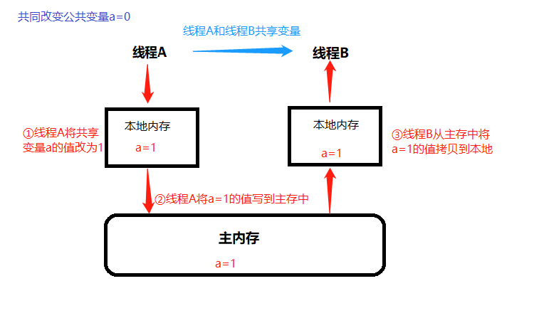
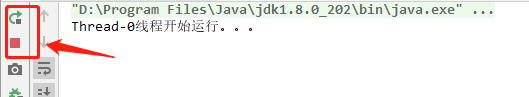

多线程有三大特性：原子性、可见性、有序性
Java内存模型（Java Memory Model ,JMM），决定一个线程对共享变量的写入时,能对另一个线程可见。从抽象的角度来看，JMM定义了线程和主内存之间的抽象关系：线程之间的共享变量存储在主内存（main memory）中，每个线程都有一个私有的本地内存（local memory），本地内存中存储了该线程以读/写共享变量的副本。本地内存是JMM的一个抽象概念，并不真实存在。
用一张图表示Java内存模型

原子性即一个操作或多个操作，要么全部执行并且执行过程不被任何因素打断，要么就都不执行。
一个经典的例子就是数据库存储的事务。原子性其实就是保证数据一致、线程安全的一部分。
Synchronized、lock可以解决线程原子性问题
当多个线程访问同一个变量时，一个线程修改了这个变量的值，其他线程能够立即看得到修改的值。
若两个线程在不同的cpu，那么线程1改变了i的值还没刷新到主存，线程2又使用了i，那么这个i值肯定还是之前的，线程1对变量的修改其他线程没看到，这就是可见性问题。
Volatile可以解决线程可见性问题
程序执行的顺序按照代码的先后顺序执行。
一般来说处理器为了提高程序运行效率，可能会对输入代码进行优化，它不保证程序中各个语句的执行先后顺序同代码中的顺序一致，但是它会保证程序最终执行结果和代码顺序执行的结果是一致的。
而在多线程就不一定了，所以我们在多线程编程时就得考虑这个问题了。
class ThreadDemo extends Thread {
boolean flag;
ThreadDemo(boolean flag) {
this.flag = flag;
}
@Override
public void run() {
System.out.println(getName() + "线程开始运行。。。");
while (flag) {
}
System.out.println(getName() + "线程已经结束。。。");
}
public void stopThread() {
this.flag = false;
}
}
public class VolatileThreadDemo {
public static void main(String[] args) {
ThreadDemo threadDemo = new ThreadDemo(true);
threadDemo.start();
try {
Thread.sleep(1000);
} catch (InterruptedException e) {
e.printStackTrace();
}
threadDemo.stopThread();
}
}先来看以上的代码，在主线程中调用
threadDemo.stopThread()方法停止线程，看上去逻辑没有问题，但是我们会发现线程没有停止。

注意：有的同学可能在测试上面代码的时候程序可以正常退出。那是因为你的JVM没有优化造成的！
造成线程没有停止的原因是
while(flag)中的flag是在线程运行的“工作内存”中获取的，而不是从“主内存”中获取的，这就造成了我们在主线程中改变flag的值对于子线程中不生效。只要在flag前加volatile关键字，强制线程每次读取该值的时候都去“主内存”中取值，就能解决我们的问题。
package com.littlestones.volatiledemo;
/**
* @program: JavaThreadLearn
* @description: volatile示例
* @author: Leil
* @create: 2019-12-24 15:22
*/
class ThreadDemo extends Thread {
volatile boolean flag;
ThreadDemo(boolean flag) {
this.flag = flag;
}
@Override
public void run() {
System.out.println(getName() + "线程开始运行。。。");
while (flag) {
}
System.out.println(getName() + "线程已经结束。。。");
}
public void stopThread() {
this.flag = false;
}
}
public class VolatileThreadDemo {
public static void main(String[] args) {
ThreadDemo threadDemo = new ThreadDemo(true);
threadDemo.start();
try {
Thread.sleep(1000);
} catch (InterruptedException e) {
e.printStackTrace();
}
threadDemo.stopThread();
}
}
注意：volatile关键字只能解决线程的可见性问题，不能解决线程的原子性问题